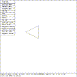
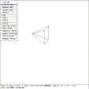
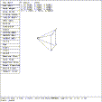

This tutorial illustrates the application of the SOL EDIT state to the ARB5 solid. In this tutorial, the view is modified by using the rotation knobs so that all sides can be seen.
 Figure (es5-top): Top View of an ARB5
mged> size 6
mged> in arb5 arb5
Enter X, Y, Z for point 1: 0 0 0
Enter X, Y, Z for point 2: 0 0 1
Enter X, Y, Z for point 3: 0 1 1
Enter X, Y, Z for point 4: 0 1 0
Enter X, Y, Z for point 5: -1 .5 .5
mged>
Figure (es5-top) is the display of arb5 in the VIEWING state that is seen when the solid is first created. In this view, the Z axis is perpendicular to the viewing screen.
 Figure (es5-rot): A Rotated View of the ARB5
mged> Twist ROTY knob clockwise and restore
mged> Twist ROTX knob counter-clockwise and restore
mged>
These actions generate a view shown in Figure (es5-rot) that shows all sides.
 Figure (es5-sed): The ARB5 in Solid Edit State
mged> Select the ``Solid Illum'' entry in the button menu
mged> Move the mouse out of the menu area
mged> Click the mouse to enter SOL EDIT state
mged>
These actions will place MGED in the SOL EDIT state as shown in Figure (es5-sed) .
{kind=link}
{kind=link}
{kind=link}